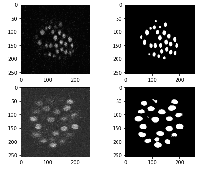
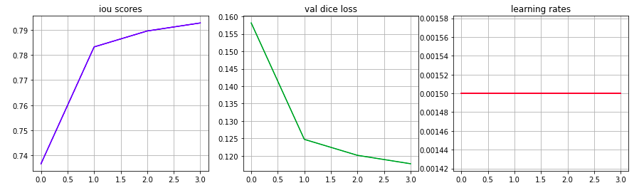
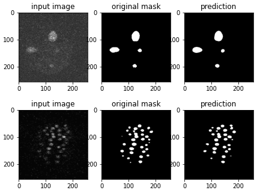

GSoC - Coding Period Week 4
Most of my time this week was spent on building the training pipeline for the proposed cell nucleus segmentation model in C. elegans embryos.
Work Done This Week (June 28th to July 4th)
- Back in week-1, I had worked on preprocessing data from the cell-tracking-challenge dataset. The dataset was extracted from
.tiffiles and saved as pairs of.pngfiles.
- To prevent anu CPU bottlenecks while training, I used PIL to resize all the training images to 1x256x256 beforehand.
- Defined a custom Dataset class for the data, this class uses a csv file that contains image id's, which are being used to identify feature-label pairs.
- Used Albumentations to define the image augmentation pipeline. Also defined a new class to add gaussian noise in training images (inputs only). The image below shows feature-label pairs from the training data, notice that one of the input images contains a lot more noise.

- Ran some tests to ensure that the dataloader works properly, plotted some feature-label pairs for visual inspection.
- Defined the network:
- Type - Feature Pyramid Network
- Backbone - ResNet-18
- Defined a rough training loop and trained the model for a couple epochs as a test. The image below showcases the metrics for the 2 epoch test-run. The IOU score is close to 79 after the 2nd epoch, which is not bad.


Planned:
- Continue working on the nucleus segmentation model.
- Use Optuna to find suitable hyperparameters.
- Experiment with mixed precision training and inference.
- Build and deploy a GUI after training the model.